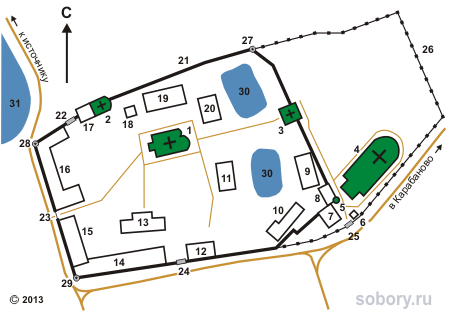

Мужской монастырь на берегах реки Махры был основан в XIV веке Стефаном Махрищским, монахом Киево-Печерской лавры. В 1558 году в присутствии царя Ивана IV и его супруги был освящен придел Троицкого собора во имя преподобного Стефана. С 1615 до 1920-х монастырь был приписан к Троице-Сергиевой лавре. Новый подъем монастыря и каменное строительство связаны с митрополитом Московским Платоном (Левшиным).
В 1923 году монастырь был закрыт советскими властями, а в годы Великой Отечественной войны колокольня, Троицкий собор и храм преподобного Стефана были взорваны. Вновь обитель открылась в середине 1990-х как женская. В 1996 году в ней начались раскопки: был открыт фундамент Стефановского храма и могила преподобного Стефана, к 2000 году храм был восстановлен. В 2004 году монастырь получил статус ставропигиального, то есть подчиненного непосредственно патриарху.
В ансамбль монастыря входят:
- Храм Стефана Махрищского,
- Храм Петра и Павла,
- Надвратный храм Сергия Радонежского,
- Монастырская трапезная,
- Архимандритский корпус,
- Странноприимный корпус,
- Монастырская гостиница (сегодня здесь действует детский приют),
- Святой источник вне территории монастыря.
Монастырю также принадлежит подворье в селе Талицы недалеко от г. Софрино.
Адрес: Александровский район, с. Махра.
Сайт: http://www.stefmon.ru/

Храмы и часовни монастыря:
1. Церковь Стефана Махрищского.
2. Церковь Петра и Павла.
3. Церковь Сергия Радонежского.
4. Церковь Троицы Живоначальной.
5. Часовня Тихвинской иконы Божией матери (освящена в 2013 г.).
Другие постройки и объекты:
6. Сторожка.
7. Иконная лавка.
8. Монастырская постройка.
9. Гостиница для VIP-гостей (2000-е гг.).
10. Монастырская постройка.
11. Гостиница (2-я пол. XIX в.), в наст.вр. - настоятельский корпус.
12. Монастырская постройка.
13. Трапезная (1873 г.).
14. Монастырская постройка.
15. Монастырская постройка.
16. Детский приют (2003 г.)
17. Кельи (1896 г.).
18. Монастырская лавка.
19. Архимандритский корпус (1896 г.), в наст.вр. – кельи.
20. Странноприимный корпус (XIX в.), в наст.вр. – кельи.
21. Ограда (кон. XVIII - нач. XIX вв.).
22. Северные ворота.
23. Западные ворота.
24. Южные ворота.
25. Новые Святые ворота.
26. Ограда новой территории.
27. Северо-восточная башня.
28. Северо-западная башня.
29. Юго-западная башня.
30. Монастырские пруды.
31. Сельский пруд.
{kind=link}
{kind=link}
{kind=link}